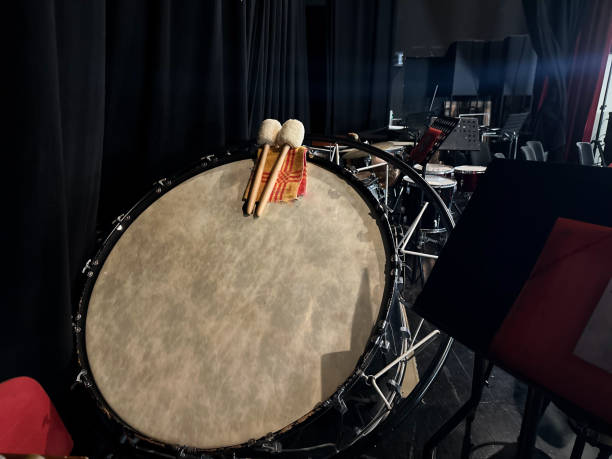
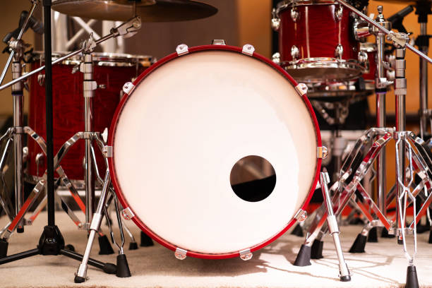

Bass Drum
Bass drums are classified as struck membranophones. They make sound by being hit by a mallet where sound then vibrates off the membrane (skin) of the drum. Bass drums produce a very low sound when struck. They can be found on their own or attached to a drum kit.

Classical Applications
Bass drums create low deep notes that work well for either a consistent beat or a compliment to the melody. It can also be used to create low rolls that lead up to a melody. They add an extra layer and make a fuller ensemble.

Famous Piece
Led Zeppelin's Good Times Bad Times has a prominent bass drum part with an intricate rhythm that compliments main melody. It is most notable inbetween lyrics.
Fun Fact!
Bass drums were originally made in order to have better time keeping. However, their role has since expanded to include mimicking sound effects such as gunshots and explosions.